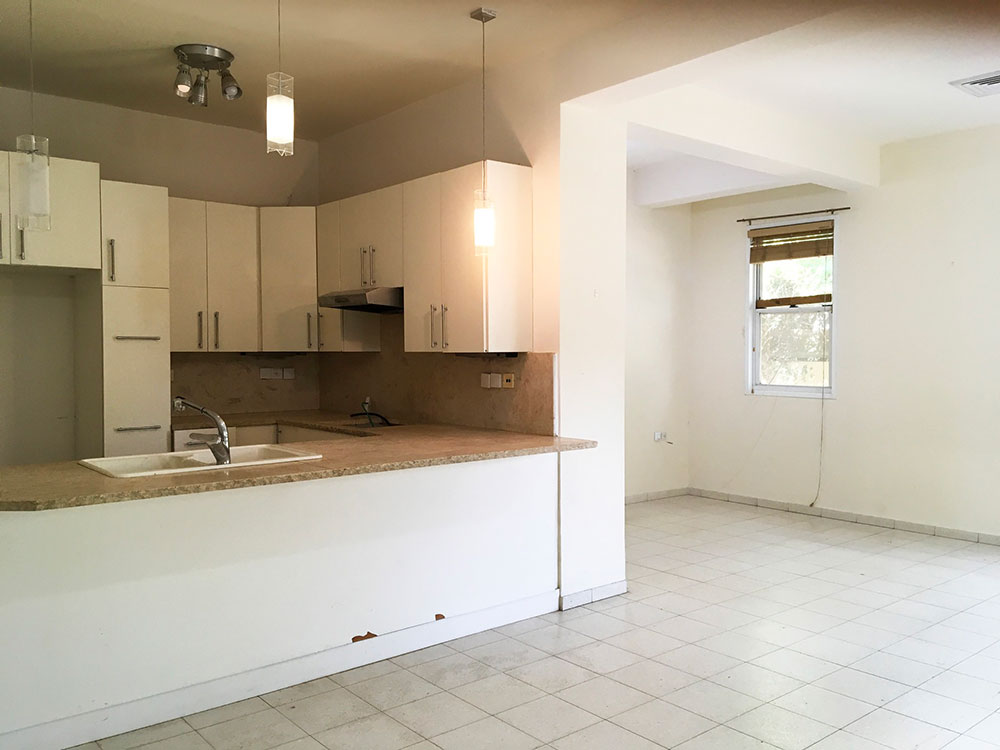
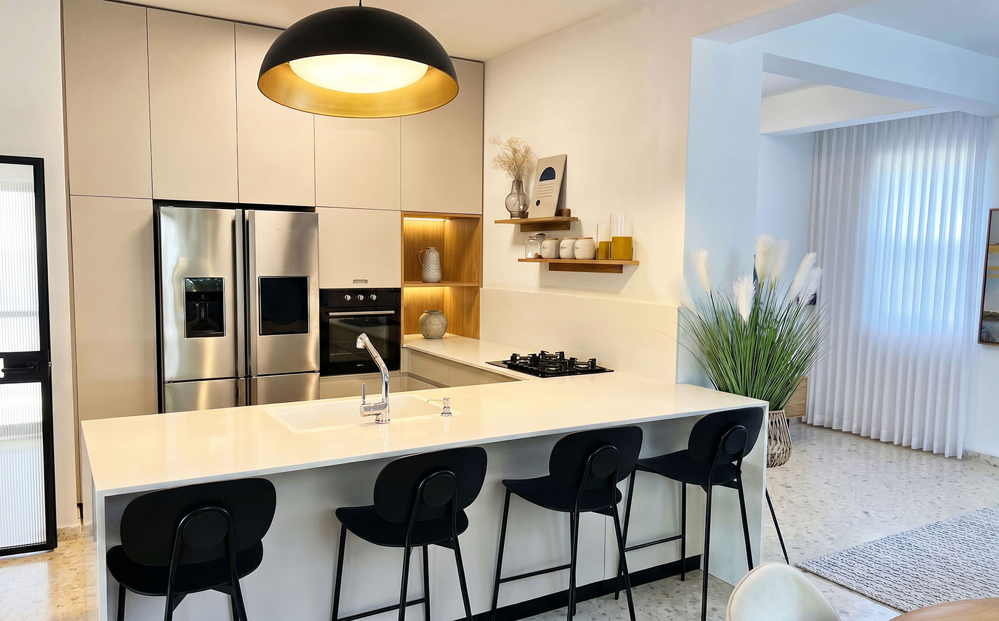
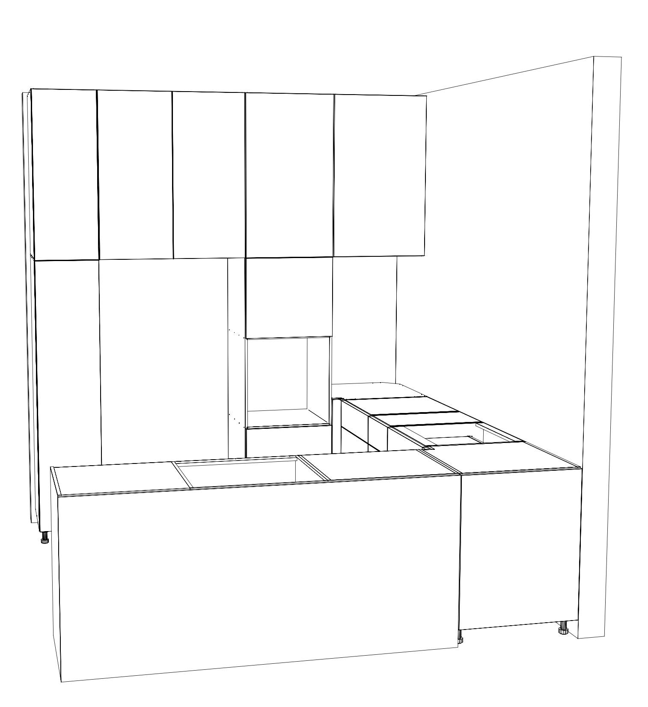
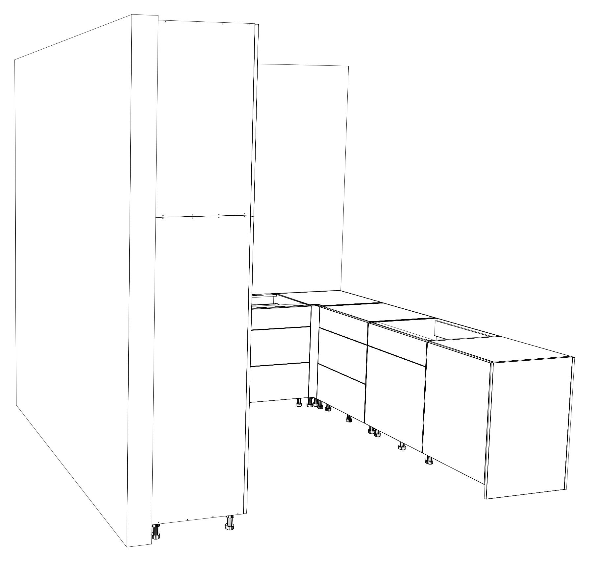
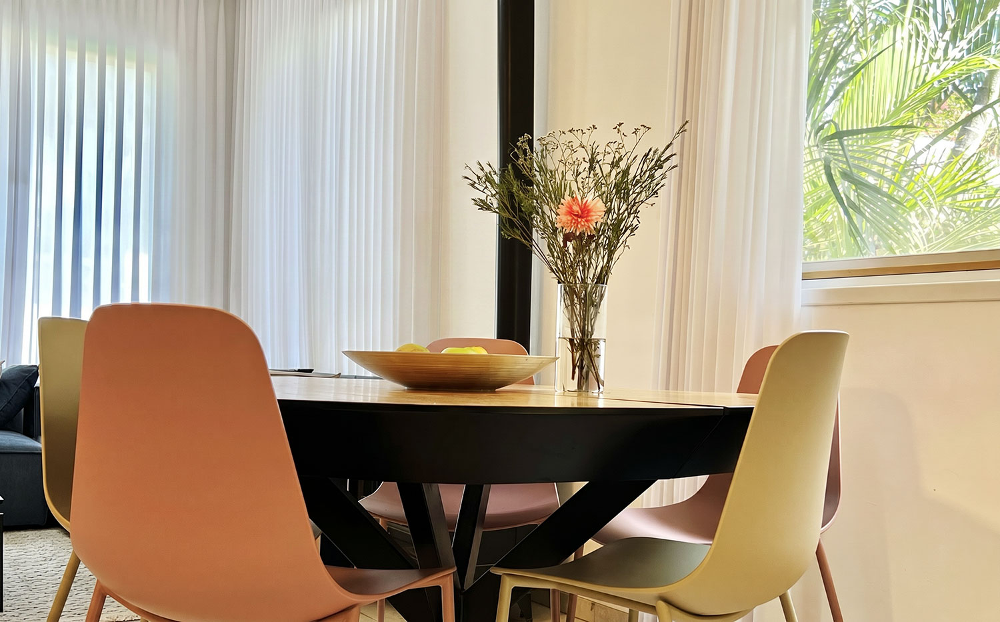
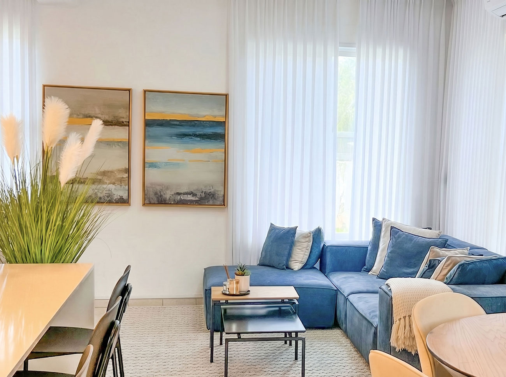
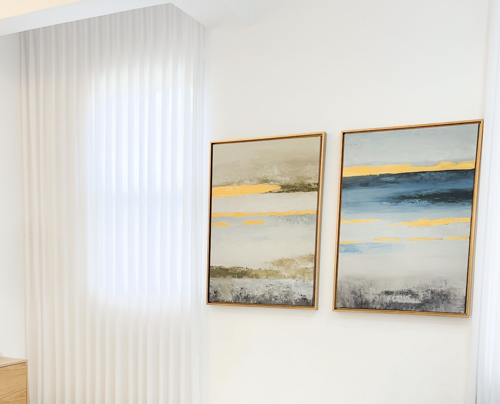
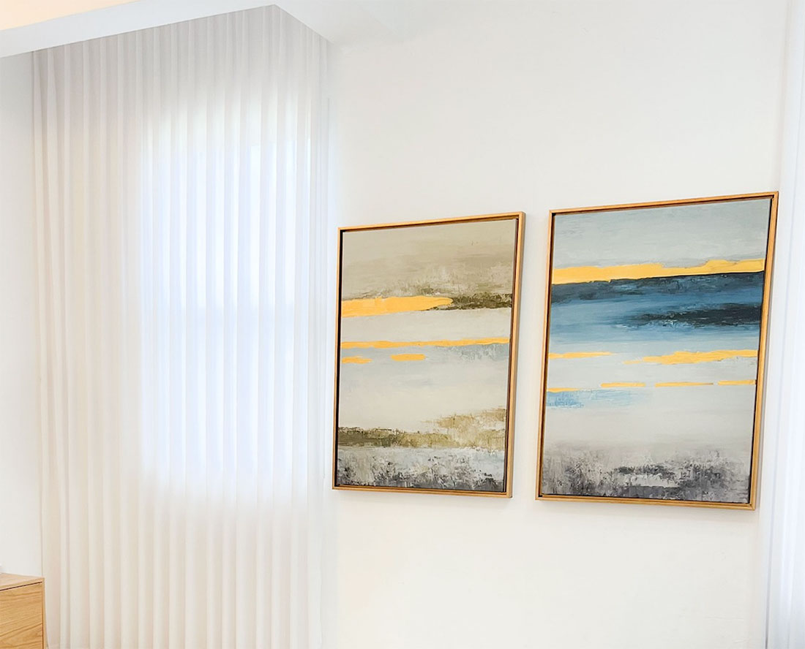

מטבח שמתוכנן למשפחה, לא רק לצילום יפה
בבית בכפר הנגיד התכנון התמקד בנוחות של משפחה עם שלושה ילדים קטנים. האי הרחב תוכנן כלב המטבח, עם כיור מרכזי שמאפשר עבודה נוחה, ישיבה לילדים ואיסוף מהיר של הכלים והלכלוך למקום אחד.
במקום שהאכילה תתפזר בבית, הילדים יכולים לשבת סביב האי, להיות קרובים להתרחשות, והכול נאסף ישר לכיור. זה פתרון יומיומי שמייצר סדר, פחות לכלוך ותחושה שהבית עובד יחד עם המשפחה.
המשך החלל מחבר בין המטבח, פינת האוכל והסלון בקצה, כך שהבית נשאר פתוח, נעים וזורם, אבל עדיין פרקטי לחיים אמיתיים.
לפני ואחרי
השינוי במטבח יצר חלל בהיר, פתוח ונוח יותר לתנועה, בישול, אכילה והתנהלות משפחתית.


סקיצות, תכנון ודיוק לפני ביצוע
לפני הביצוע נבדקו אפשרויות תכנון, מיקום האי, זרימה בין המטבח לפינת האוכל והקשר אל הסלון. המטרה הייתה להגיע למטבח יפה, אבל קודם כל נוח ונכון למשפחה.


פינת אוכל, סלון והתאמת צבעים
מעבר למטבח עצמו, נעשתה התאמת צבעים וסטיילינג שמחברים בין הספה הכחולה, התמונות, הווילונות, התאורה ופינת האוכל לשפה אחת רגועה ונעימה.




מה היה חשוב בתכנון?
בבית עם ילדים קטנים, עיצוב טוב חייב להיות גם יפה וגם סלחני לחיים. אי רחב עם כיור, מקומות ישיבה נוחים וזרימה נכונה בחלל יכולים לעשות הבדל גדול בתחושת הסדר בבית.
הבית לא צריך לעבוד נגד המשפחה. הוא צריך לעזור לה להתנהל בקלות, לשמור על סדר, לארח, לבשל ולחיות בנוחות.